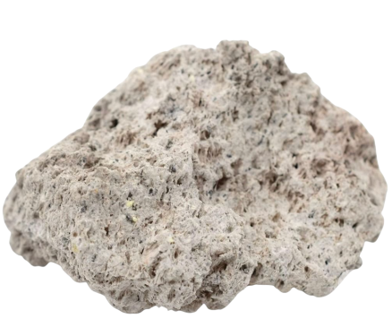
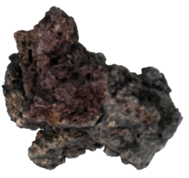
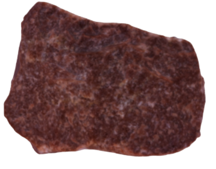

Igneous Rock — The Beginning
click on each rock to learn more!



Scientific Process:
Igneous rocks form when molten magma cools and solidifies, emerging from deep within the Earth as something entirely new. They represent the raw beginnings of creation — powerful, unrefined, and full of potential.
My Portfolio:
The home page marks the origin of creation, the first spark where ideas begin to take shape. Like magma cooling into solid form, it captures the foundation of design itself — raw energy becoming structure. Each project orbits around the igneous rock, symbolizing creativity drawn back to its source, the birthplace of design, experimentation, and transformation.